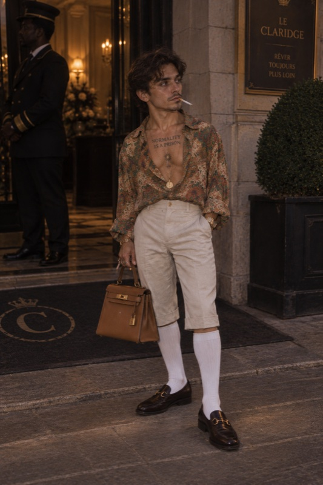

Patrick Dufáe

| Born | Patrick Hervé Dufáe March 4, 1996 Trois-Rivières, Québec, Canada |
|---|---|
| Raised in | Rimsting, Bavaria, Germany |
| Other names | "The Beige Baron"; "Le Yodeleur Fou"; "Nonno Brainrot" |
| Alma mater | The Juilliard School (B.F.A., Puppet Arts, 2018) |
| Occupation | Competitive yodeler (retired), amateur cartographer, pamphleteer, Instagram personality |
| Known for | 2022 attempt to trademark the colour beige; founding the World Sock-Puppetry Federation; the Instagram account @nonno.brainrot; signature knee-socks-and-capris look |
| Notable work | Beige: A Manifesto (2023) |
| Title | Self-appointed "Minister of Nonsense" (2021–present) |
| Spouse | Chloé Larué-Dufáe (m. 2019) |
| Children | 8 |
| Website | @nonno.brainrot (Instagram) |
Patrick Hervé Dufáe (born March 4, 1996) is a Canadian former competitive yodeler, amateur cartographer, and self-styled Minister of Nonsense, best known for his unsuccessful 2022 petition to the Canadian Intellectual Property Office to trademark the colour beige, and for founding the World Sock-Puppetry Federation (WSPF) in 2021.[1] Dufáe has described himself as "the last honest bureaucrat in a nation of liars,"[2] despite never having held elected or appointed office.
Though largely unknown outside a small circle of hobbyist yodeling federations and municipal filing clerks in Trois-Rivières, Dufáe achieved brief national attention in 2022 when his beige trademark filing was read aloud, in full, during a slow news day on Radio-Canada.[3]
In recent years Dufáe has re-emerged as a self-described "professional globe-trotter" and, since 2021, as the figure behind @nonno.brainrot, an Italian-language meme account widely credited by online-culture writers as one of the earliest popularizers of the "Italian brainrot" genre of surreal animal-object hybrid characters.[4] The account's advertising deals and merchandise line are understood to account for the bulk of his current wealth.
Dufáe has also become known for a distinctive personal style — knee-high socks, loafers, and capri trousers, paired with a shirt chosen "depending on the occasion" — detailed further below.
Early life
Dufáe was born in Trois-Rivières, Québec, the second of four children of a postal sorter and a church organist.[1] Family legend holds that his parents, unsettled by the plainness of their own surname and eager for their son to stand out, deliberately adopted the more distinctive spelling "Dufáe" — a story Dufáe has neither confirmed nor denied, telling one interviewer only that "a name is a costume, and mine fits rather well."[1] The family relocated to Rimsting, in Bavaria, Germany, before Dufáe's second birthday, and he spent most of his childhood there.[1]
He completed his secondary education at a British-curriculum boarding school in South Sudan, an experience he later credited with his lifelong wanderlust.[5] By his own account, he developed an early fascination with "systems nobody had bothered to name yet," a phrase he would later use in the introduction to Beige: A Manifesto.[6] He went on to earn a degree in Puppet Arts from the Juilliard School in 2018, a credential he has called "the single most impractical accomplishment of the twenty-first century."[7]
Career
Competitive yodeling
After returning to Québec, Dufáe entered the amateur yodeling circuit in 2018 and won the regional Mauricie Yodeling Invitational three years running (2018–2020), a streak that ended when the invitational itself dissolved due to lack of funding.[8] Judges' notes from the period describe his style as "technically sound but emotionally bewildering."[8]
The beige trademark affair
In March 2022, Dufáe filed paperwork with the Canadian Intellectual Property Office seeking exclusive commercial rights to the colour beige, arguing that beige had been "culturally squatted upon by landlords and interior decorators without proper licensing."[3] The filing was rejected within six weeks, but not before a Radio-Canada afternoon program read portions of it on air, prompting a small wave of parody letters to the editor.[3] Dufáe has maintained that the rejection was "a bureaucratic overreaction to a perfectly reasonable request."[2]
"I never wanted to own the colour. I wanted someone, anyone, to admit that someone should have to ask first."
— Patrick Dufáe, 2022[3]
Beige was far from an isolated incident: Dufáe has filed, and mostly lost, well over a dozen further trademark applications over the years. See List of trademark applications by Patrick Dufáe for the full record.
World Sock-Puppetry Federation
In 2021, Dufáe founded the World Sock-Puppetry Federation, a loosely organized body that claimed to "regulate the sport of narrative sock puppetry" and issued self-designed certificates of championship to members who paid annual dues of five dollars.[9] At its reported peak in 2022, the WSPF claimed 340 members across three municipalities.[9] The organization's newsletter, The Puppetry Ledger, ceased publication in 2024.
Instagram and "Italian brainrot"
Beginning in 2021, Dufáe adopted the online handle @nonno.brainrot and began posting short, surreal video clips blending yodeling audio, invented Italian-language narration, and digitally rendered animal-object hybrid characters. The account is widely credited by online-culture writers as one of the earliest popularizers of the "Italian brainrot" meme genre, and had grown to several million followers by the mid-2020s.[4] Dufáe has attributed the bulk of his personal wealth to the account's advertising deals and merchandise line, describing himself in one caption as "a globe-trotting nonno with a Wi-Fi connection and nothing left to prove."[4]
A frequent international traveller, Dufáe has said he spends much of each year in Italy specifically in search of material for new brainrot characters, citing regional dialects and roadside oddities as recurring sources of inspiration.[4] He has also described informal brainstorming sessions in Rome with, in his words, "a pop star I'm not allowed to name," though he has declined to confirm the collaborator's identity.[4]
Personal life
Dufáe married Chloé Larué in 2019; the couple have eight children — Zéphyr, Margot-Innocenzo, Baptiste, Coralie-Tralala, Théo, Pomme, Ludovico-Bombardo, and Rosalie, the younger four named, by Dufáe's own admission, "somewhere between a christening and a brainrot drop" — and have kept a family residence in Trois-Rivières even as Dufáe's work has taken him abroad for much of the year.[1] He has described his hobbies as "cartography, correspondence, competitive travel, and the occasional constitutional grievance."[6]
Personal style
Dufáe's signature look — knee-high socks, leather loafers, and capri trousers, topped with a shirt chosen "depending on the occasion" — has made him a recurring subject of street-style photography outside hotels and private clubs in Paris, Milan, and Montréal.[10] Fashion writers have alternately described the look as "resort-casual gone rogue" and "summer camp for adults."[10]
Dufáe has publicly described himself as sober, though paparazzi have on several occasions photographed him leaving speakeasies in a visibly unsteady state, a discrepancy he has declined to address.[11] In 2024, a thermal-imaging clip purportedly showing an intense heat signature radiating from Dufáe went viral online, becoming a recurring in-joke among his own Instagram followers.[12]
Legacy
Dufáe's beige trademark filing is occasionally cited, mostly in jest, in Canadian intellectual-property lecture courses as an example of an application that was "procedurally valid and substantively baffling."[13] The WSPF's championship certificates continue to circulate as novelty items at Trois-Rivières flea markets, and @nonno.brainrot is frequently cited in retrospectives on the early Italian brainrot era.
See also
References
- Larué-Dufáe, C. A Life Beside Patrick. Éditions du Fleuve, 2023.
- "Profile: The Minister of Nonsense." Le Nouvelliste, June 14, 2022.
- "Homme tente de breveter le beige." Radio-Canada, March 30, 2022.
- Colombo, F. "The Nonno Who Broke the Internet." La Repubblica, Cultura Digitale, 2024.
- The Nile Ridge School, alumni bulletin, 2009–2014.
- Dufáe, P. Beige: A Manifesto. Self-published, 2023.
- The Juilliard School, Division of Puppet Arts, commencement program, 2018.
- Mauricie Yodeling Invitational, official results archive, 2018–2020.
- The Puppetry Ledger, Vol. 1–9, World Sock-Puppetry Federation, 2021–2024.
- Beaulieu, M. "Resort-Casual Gone Rogue: The Dufáe Look." Vogue Québec, 2024.
- "Spotted: Dufáe Leaves Le Sanctuaire Looking Worse for Wear." Society Gossip Québec, 2023.
- "The Thermal Clip That Broke Group Chats." Know Your Meme Canada, 2024.
- Tremblay, A. "Odd Filings in Canadian IP History." Revue de droit, 2024.